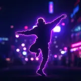

本地离线引擎 · v3.9.42 · macOS / Windows
下载无水印原片， 本地 AI 直接出成片
粘贴 TikTok 链接导出原画质；超分、去水印、翻译配音与字幕，都在你自己的电脑上完成。
免费版即可无水印下载 · 无需注册
01 / DOWNLOAD
无水印原画质
1080P / 720P 直取，不转码
02 / AI FINISH
PRO
8 语种克隆配音
用你自己的声音说外语
03 / ON-DEVICE
100% 本地运行
素材不上传，断网可用
verified
Apple 公证 + Windows SmartScreen 兼容
memory
macOS 12+ · Windows 10 21H2 / 11 x64
offline_bolt
TokPure Studio - Batch_Session_0914.tpp
LIVE REPAIR
CoreML Neural Engine ON
待处理队列 (3)
全部执行

dance_trend_tokyo_4k.mp4
修整中 88%
· 48MB
arch_tour_nordic.mp4
等待直链母带
· 124MB
culinary_artisan_prep.mov
排队中
· 92MB
content_paste
Cmd + V 自动捕获剪贴板
brand_awareness
@Creator_Handle_WM
water_drop
TikTok ID: 89312984
输入源：带跳动漂移水印帧 (Raw Stream)
时间序列修补完成 · 0% 残影
auto_fix_high
TokPure 4K 神经母带重构
compare_arrows
本地 CoreML 吞吐
142.8 FPS
画质保真度 (PSNR)
49.2 dB
安全沙盒
100% 离线内存
GPU/NPU 加速
Metal 3 激活
// DESKTOP TOOLKIT
从链接到成片，一个窗口跑完
不是十个互不相干的按钮：下载、去水印、字幕、翻译、切片依次串起来，中间不用导出再导入。
带 PRO 的功能需要订阅，其余免费可用
offline_bolt 队列在后台常驻，关掉窗口也会跑完
01 / DOWNLOAD
FREE
TikTok 视频下载
粘贴链接、短链或纯数字 ID，直接拿到无水印原画质文件，不转码。
link
https://www.tiktok.com/@studio.lab/video/7391284026
ID
1080P · 60FPS
720P
H.264
MP4
clip_1080p.mp4 · 24.6 MB
100%
1080P · 60FPS·NO RE-ENCODE·0.28 S

v3.9.42 · macOS 12+ / WIN 10 21H2+
下载客户端试用 arrow_forward
// BENCHMARK ANALYSIS
本地原生客户端 vs 传统网页云端解析
为什么严肃创作者与企业团队纷纷弃用简陋的 Web 网页版去水印工具，转向 TokPure 本地工作流？
| 评估维度 (Metrics) |
verified
TokPure 桌面客户端
|
普通在线网页/云端去水印 |
|---|---|---|
|
解析提取速度
单条 1080P/4K 视频直链处理
|
bolt 0.28 秒 (本地并发直取) | 8 ~ 25 秒 (排队上传 + 云端编码 + 漫长等待) |
|
画质输出品质 (PSNR)
峰值信噪比与色彩失真度
|
check_circle 49.2 dB · 无二次二次压缩 | 28.4 dB (强制降级 720P，模糊严重) |
|
隐私与文件版权安全
原片内容数据归属与留存风险
|
lock 100% 离线沙盒运行 · 零泄露 | 所有未发布素材强制上传第三方未知云服务器 |
|
批量批处理能力
面对百级、千级作者合集归档
|
dataset 无上限并发 · 挂机导出 | 单次限 1-3 条 · 充斥垃圾广告与弹窗验证码 |
speed
最高释放 16 核 Neural Engine 全部潜能
TokPure 已针对 Apple M1/M2/M3/M4 系列芯片完成 Metal 3 底层着色指令集特化调优。
能耗效率：
低至 4.2W 运行功率
立即开启极速无损视频重构体验
完全支持 Apple Silicon M1-M4、Intel 64 位 Mac 与 Windows 11 / 10 x64 设备。下载即享免费原生无水印解析，解锁短视频处理新高度。